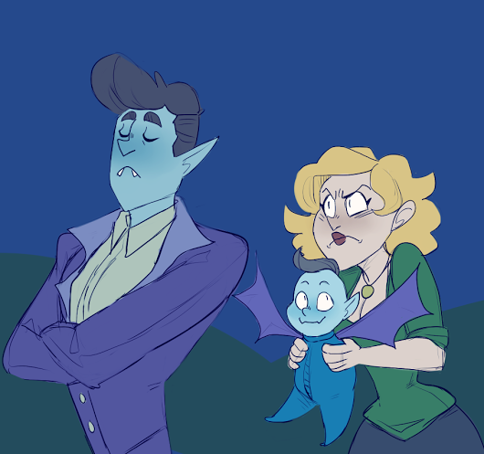

你最近有什么新鲜事要分享吗?
Google+ 上的最新热点信息
八国联军占领北平城，烧了圆明园。要看是站在哪个角度看待这件事，站在慈禧老佛爷王大臣们的角度当然是侵略。普通大清国的人怎么看待呢？贫民，富人又怎么看待的呢？
慈禧太后带领着王爷大臣们逃跑了，而清朝的国民们对八国联军却争先恐后的送粮食，运物质，作导游甚至搬梯子让鬼子进紫禁城，争作带路党的是主流。
国家是由人民组成的，民主的国家是由自由民组成的。而奴隶国家不是由人民组成的，甚至不能称为国家，一般叫王朝。那些平民或富豪都只是统治者的奴隶，所以这种国家被打败不是奴隶的耻辱，因为对奴隶来说，最多是换个主人。而如果战胜奴隶主的是文明人类，奴隶们甚至有机会打破专制，成为自由的人。
37
20
爱因思念:
Google+ 上的最新热点信息
别理那些“民主维稳奸细”们2016-10-08 20:02:39栏目：默认栏目世界最残忍的事莫过于向一个井底的人垂放长度不够的绳子，井底的人纵身跳起，但就是够不到这根救命绳子，如果没有人垂放这根短截的救命绳？这个人只会在绝望中死去，但放绳子的恶作剧将会使绝望的人重新燃起希望，但这种永远无法企及的“希望”将带来更大的绝望与疲敝，确切地说就是更大的折磨

37
20
爱因思念: